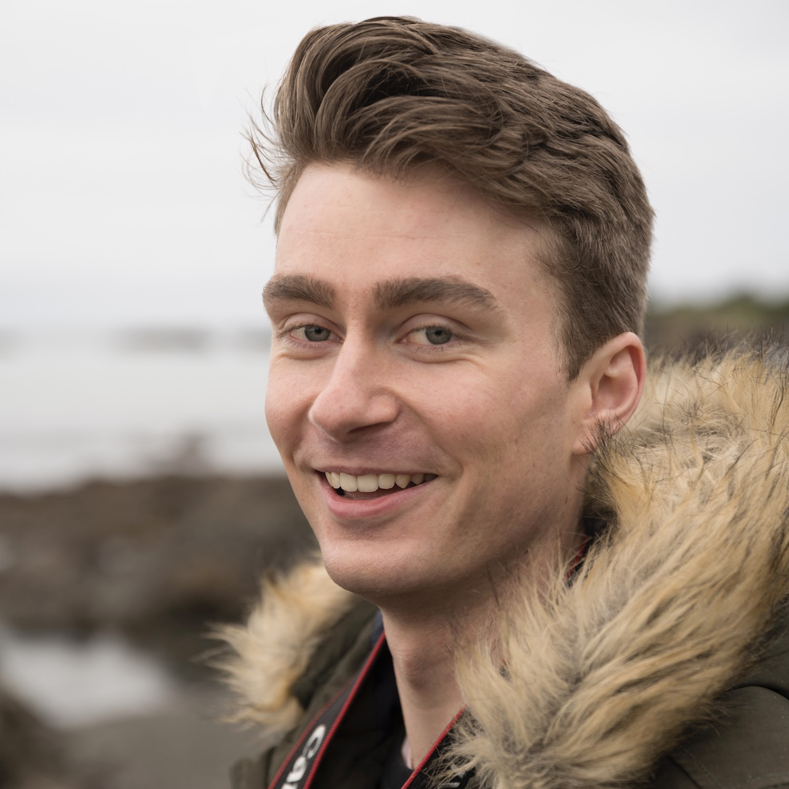

Hello! I’m Louis (pronounced Louie, but I’ll answer either way!). I’m currently living in Wellington and have called this place home for the last three years.
I’m attending Dev Academy because I have a love for programming! I started out trying to study software engineering in Christchurch, but very quickly decided this wasn’t for me (I found the maths horrific). I then moved to Welly in 2017 and started my (now completed) Bachelor of Creative Media Production at Massey. During my study, I specialised in video game production and I absolutely loved it.
At EDA, I’m hoping to widen my career options with some more employable skillsets - learning anything related to programming is exciting, and a step in the right direction for me!
